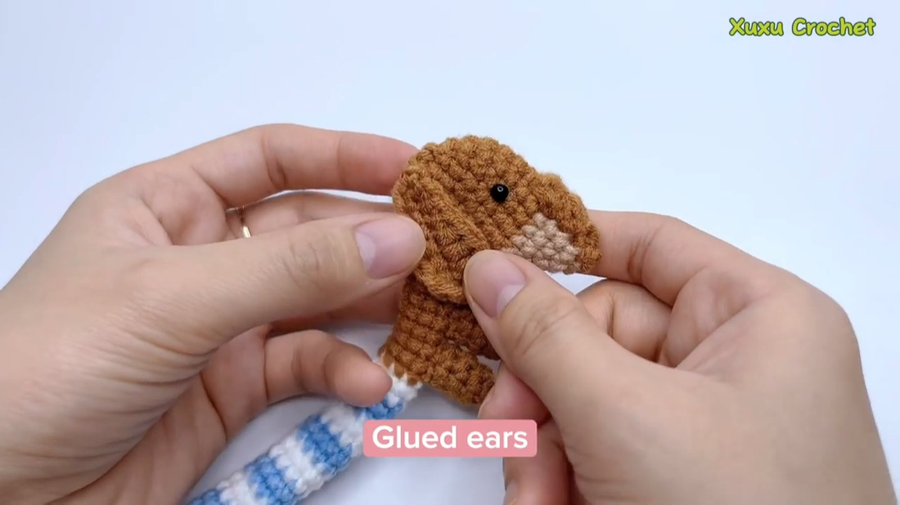
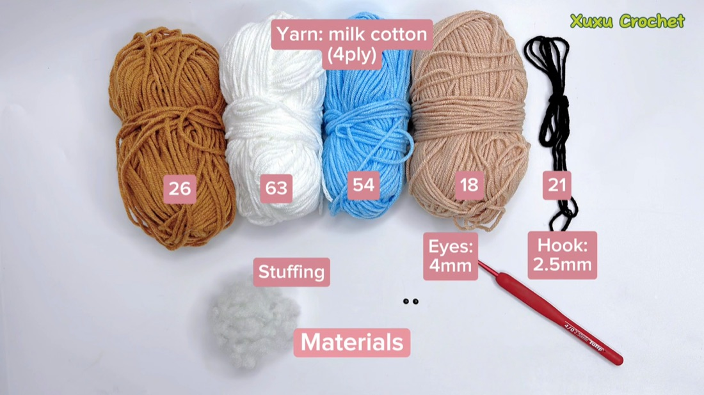
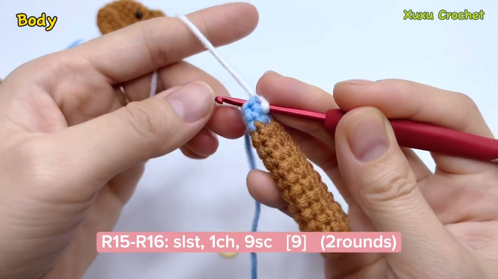
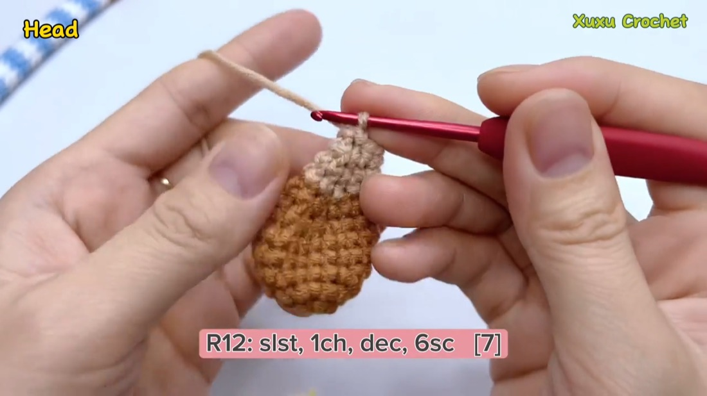
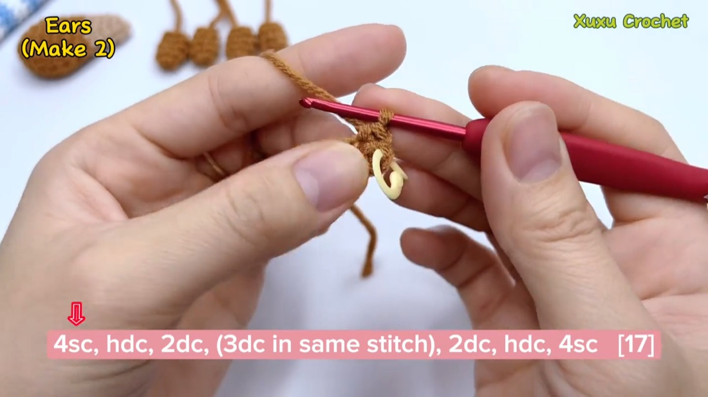
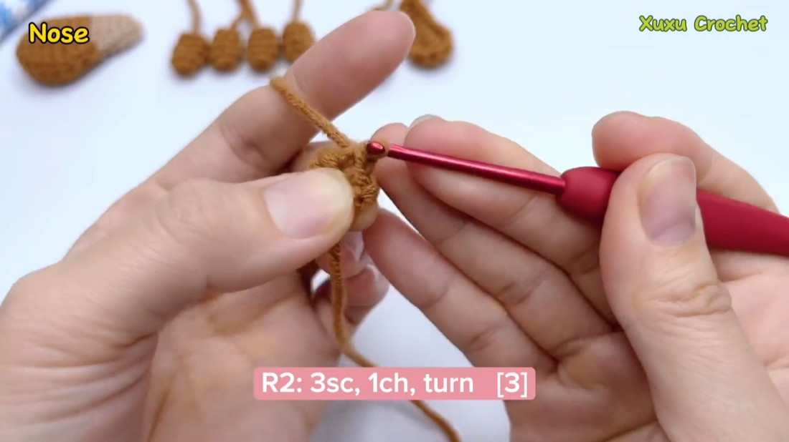
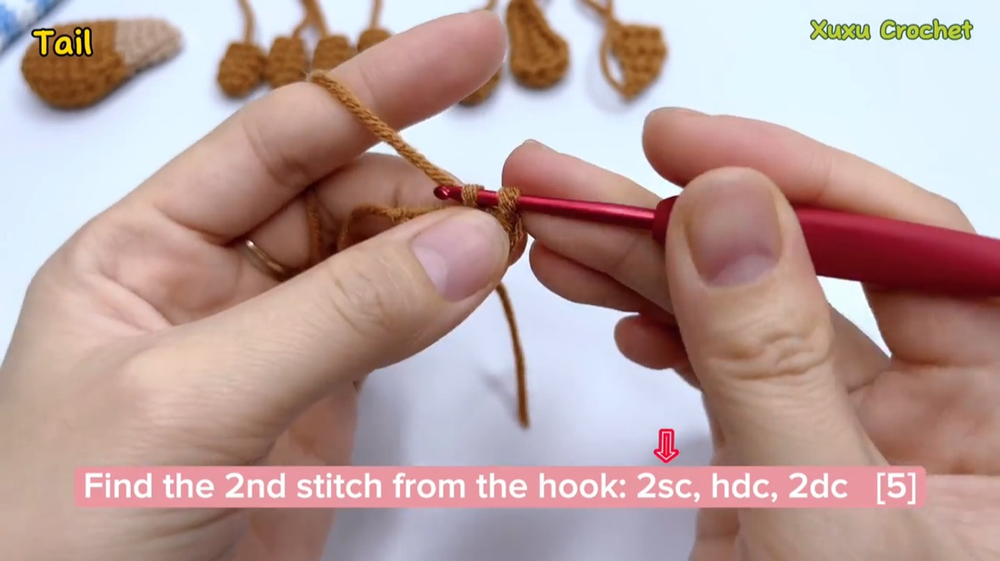

Bruno the Dachshund
A sausage-dog amigurumi with a striped blue-and-white body, floppy ears, a beige snout and a stubby tail. Transcribed from the Xuxu Crochet video tutorial — every row links to the moment it appears on screen. Tick rows off as you crochet; your progress is saved.

Materials

- Brown #26 milk-cotton 4-ply — body, head, legs, ears, tail
- White #63 — body stripes
- Blue #54 — body stripes
- Dark beige #18 — snout
- Black #21 — embroidered mouth
- 2.5 mm crochet hook, 4 mm safety eyes, stuffing, tapestry needle
Gauge isn’t critical, but crochet tightly enough that stuffing can’t peek through. This pattern is worked in joined, turned rows, not a continuous spiral: nearly every row starts “slst, 1ch”, which keeps each tube flat and gives a tidy edge for sewing.
Body

With brown yarn — the longest piece, a tube that stripes its way from tail-end to chest. Stuff gradually as you go so it stays firm but squeezable.
| Row | Instructions | Video |
|---|---|---|
| 6sc in magic ring [6] | 0:36 | |
| slst, 1ch, (sc, inc)*3 [9] | 1:20 | |
| slst, 1ch, 9sc [9] — 10 rows | 2:08 | |
| Change to blue yarn | 2:58 | |
| slst, 1ch, 9sc [9] — 2 rows | 3:14 | |
| Change to white yarn | 4:22 | |
| slst, 1ch, 9sc [9] — 2 rows | 4:36 | |
| Change to blue yarn | 5:46 | |
| slst, 1ch, 9sc [9] — 2 rows | 6:04 | |
| Change to white yarn | 6:54 | |
| slst, 1ch, 9sc [9] — 2 rows | 7:14 | |
| Keep alternating blue and white in 2-row stripes up to R40 | 7:50 | |
| Change to brown yarn | 8:06 | |
| slst, 1ch, 9sc [9] — 8 rows | 8:28 |
Head

With brown yarn. A rounded ball that tapers into the beige snout and closes on a small 7-stitch opening — flat and neat for sewing.
| Row | Instructions | Video |
|---|---|---|
| 6sc in magic ring [6] | 10:08 | |
| slst, 1ch, 6inc [12] | 10:40 | |
| slst, 1ch, (sc, inc)*6 [18] | 11:34 | |
| slst, 1ch, 18sc [18] — 3 rows | 12:10 | |
| slst, 1ch, 4dec, 10sc [14] | 12:50 | |
| slst, 1ch, 2dec, 10sc [12] | 14:00 | |
| Change to dark beige yarn | 15:02 | |
| slst, 1ch, dec, 9sc [10] | 15:18 | |
| slst, 1ch, dec, 8sc [9] | 16:30 | |
| slst, 1ch, dec, 7sc [8] | 17:28 | |
| slst, 1ch, dec, 6sc [7] | 18:12 |
Slst and cut at 19:16. The beige rows are the snout — keep them centred when sewing, and stuff the head firmly before closing.
Legs make 4
With brown yarn. Four short, stubby tubes — two front, two back. Stuff lightly; the needle needs to pass through later.
| Row | Instructions | Video |
|---|---|---|
| 6sc in magic ring [6] | 20:24 | |
| slst, 1ch, 6sc [6] | 20:58 | |
| slst, 1ch, 6sc [6] — 2 rows | 22:02 | |
| Slst, cut, leave a long tail for sewing | 22:50 |
Ears make 2

With brown yarn. Long floppy ovals worked from a foundation chain, with a shell of three double crochets shaping the rounded tip. The ear curls slightly on its own — exactly the look you want.
| Row | Instructions | Video |
|---|---|---|
| Chain 9; 2nd stitch from hook: 4sc, hdc, 2dc, (3dc in same stitch), 2dc, hdc, 4sc [17] | 23:12 | |
| Cut, leave a long tail for sewing | 26:24 |
Nose

With brown yarn. A tiny flat triangle in turning rows, tapering from 3 stitches to 1. “Skip 1st” means skip the first stitch — that’s what makes the taper.
| Row | Instructions | Video |
|---|---|---|
| Chain 4; 2nd stitch from hook: 3sc, 1ch, turn [3] | 27:20 | |
| 3sc, 1ch, turn [3] | 27:48 | |
| 3sc, turn [3] | 28:16 | |
| skip 1st, 2sc, 1ch, turn [2] | 28:40 | |
| 2sc, turn [2] | 29:08 | |
| skip 1st, sc, 1ch, turn [1] | 29:28 | |
| sc [1] | 29:44 | |
| Cut, leave a long tail for sewing | 29:54 |
Tail

With brown yarn. One tiny curve, worked from a foundation chain just like the ears — only shorter.
| Row | Instructions | Video |
|---|---|---|
| Chain 6; 2nd stitch from hook: 2sc, hdc, 2dc [5] | 30:26 | |
| Cut, leave a long tail for sewing | 31:10 |
Assembly
Sew with the long tails you saved, using small whip stitches through back loops so seams stay invisible. Head first — leg placement depends on it.
- Sew the head to the body. Centre it on the brown tip and go around twice — this joint carries the most weight. 31:30
- Sew the legs: front pair just behind the head, back pair near the tail, evenly spaced so Bruno stands level. 34:12
- Sew the nose onto the beige snout, point facing down and outward. 37:30
- Sew the ears to the top sides of the skull, flopping forward over the stripes. 39:22
- Sew the tail to the back tip, angled slightly upward. 40:38
- Glue in the 4 mm eyes above the nose, symmetric about the snout. For a baby or pet, embroider them with black yarn instead. 42:04
- Dab fabric glue at the base of each ear so the curl holds. 42:38
- Embroider the mouth with black yarn: a short line from the nose tip splitting into a small smile. 43:14
Weave in the ends, give Bruno a final shaping squish — done.